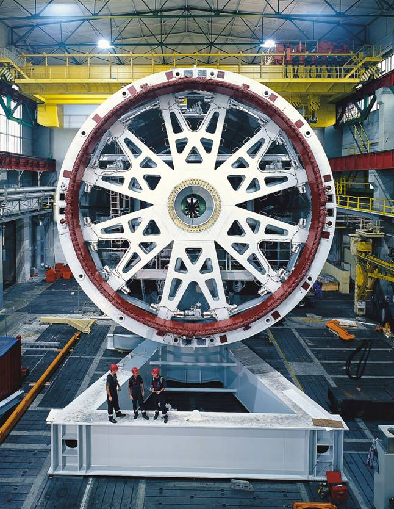
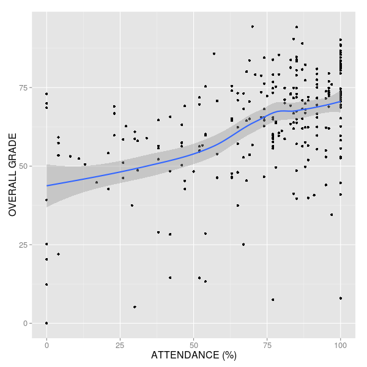
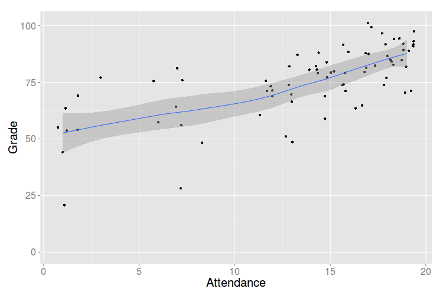
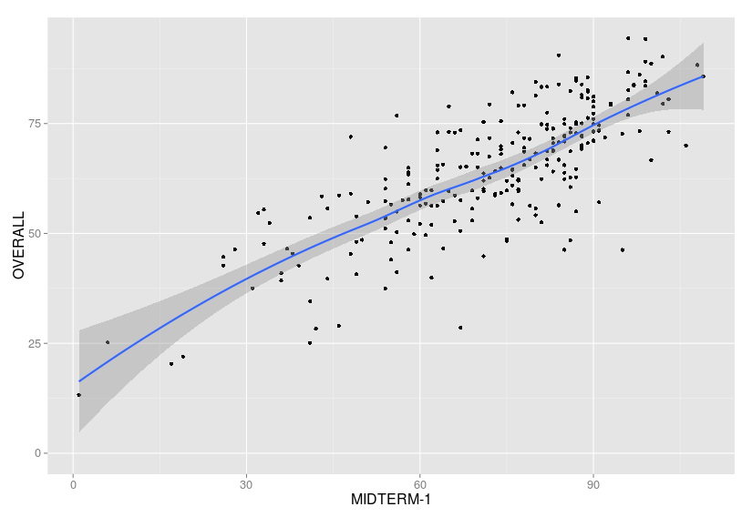

class: center, middle # EE-361 ELECTROMECHANICAL ENERGY CONVERSION ## Ozan Keysan [http://keysan.me](http://ozan.keysan.me) Office: C-113 <span class="meta">•</span> Tel: 210 7586 --- # About the Course ## Section-2 ### - Tuesday: 9:40-11:30 EA-202 ### - Thursday: 8:40-10:30 EA-202 ### Office Hours: Friday 13:40-14:30 --- # About the Course ## Announcements, Assignments: [ODTUClass](odtuclass.metu.edu.tr) ## Presentations: [keysan.me/ee361](http://keysan.me/ee361) --- # Grading: ## - Quizzes: 10% ## - Midterm: 22% ## - Final: 33% ## - Laboratory: 20% ## - Homeworks: 15% --- # Course Coordinator # Dr. Emine Bostancı ## Office: C-107 ## Email: emineb@metu.edu.tr ## Tel: (0312) 210 23 63 --- # Coordinator Assistants # Yusuf Basri Yılmaz ### Office: C-106 ### Email: yusuf.yilmaz_01@metu.edu.tr # Enes Ayaz ### Office: C-114 (aka PowerLab) ### Email: eayaz@metu.edu.tr --- # Textbooks: ### - Electric Machinery, Fitzgerald, Kingsley and Umans, McGraw-Hill, 6th ed. 2003. ### -[Principles of Electric Machines and Power Electronics](https://nemasumit.files.wordpress.com/2017/08/246613252-principles-of-electric-machines-and-power-electronics.pdf), P.C. Sen ### - [Electric Machinery & Transformers](http://library.metu.edu.tr/search~S4?/aguru/aguru/1,20,35,B/l856~b1417325&FF=aguru+bhag+s&4,,4,1,0/indexsort=-), Guru and Hızıroğlu, Saunders College Publishing, 3rd ed. 2001. --- # Course Outline: -- <h1> <table> <tr> <td> Weeks: </td> <td>Subject</td> </tr> <tr> <td>1</td> <td>Introduction</td> </tr> <tr> <td>2-3</td> <td>AC Electric Circuits</td> </tr> <tr> <td>4-6</td> <td>Magnetic Circuits</td> </tr> <tr> <td>7-8</td> <td>Transformers</td> </tr> <tr> <td>9-12</td> <td>Electromechanical Energy Conversion</td> </tr> <tr> <td>13-14</td> <td>Introduction to Power Electronics</td> </tr> </table> </h1> --- # Scope of EE361 (and 362) ## Electromechanical Energy Conversion(EMEC): * ### Electrical Energy to Mechanical Energy (i.e. **Motors**) * ### Mechanical Energy to Electrical Energy (i.e. **Generators**) * ### + **Transformers** (Not a EMEC device) * ### Introduction to **Power Electronics** (Static Energy Conversion) --- # Electric Motors -- ### How many electric motors are there in the classroom? -- ### Each one of you carry at least one of these: -- <img src="http://upload.wikimedia.org/wikipedia/commons/e/ee/Vibramotor.jpg" alt="Drawing" style="width: 350px;"/> --- # Electric Machines ### But they can also be big: <img src="http://upload.wikimedia.org/wikipedia/commons/c/c2/Siemens_Schottel_Propulsor.jpg" alt="Drawing" style="width: 450px;"/> Siemens Ship Propulsion Motors (Induction Motor) --- ## Very Big  <img src="http://2.bp.blogspot.com/-Sb34Z7zwpkU/VLGgaGy58jI/AAAAAAAAV3E/GQF9wlSFEx4/s1600/enercon2.jpg" alt="Drawing" style="width: 360px;"/> Enercon 7.5 MW, Direct-Drive Wind Turbine Generator (Synchronous Motor) --- ## Very Very Big: [700 MW Synchronous Generator](https://www.itaipu.gov.br/en/energy/generating-units) -- <img src="https://raw.githubusercontent.com/ozank/ozank.github.io/master/presentations/images/itaipu_hydro.png" alt="Drawing" style="width: 360px;"/> ### Itaipu Dam, Brasil: 16 m diameter, 91 rpm, Rotor Mass: 2650 t --- # Electric System of Turkey -- ## Capacity: 95 GW (5th in Europe) -- ## Max. Consumption: 50 GW (~25 million kettles) -- ## Annual Energy Generation: 307 TWh ### (30% domestic, 70% industrial) -- ## Per Capita Consumption: 3800 kWh/year --- ### Per Capita Consumption: 3800 kWh/year <iframe src="https://ourworldindata.org/grapher/per-capita-electricity-consumption?tab=chart&country=TUR~OWID_WRL~DEU~KOR~GRC~SYR" loading="lazy" style="width: 100%; height: 500px; border: 0px none;"></iframe> <a href="http://databank.worldbank.org/data/embed/Elektrik-Tuketim/id/608e39e5?ti=y&ds=n&dd=n&tb=y&sh=n&dw=n&pr=n&inf=n&zm=y&md=y&navigator=n&theme=darkGrey&bdrClr=rgb(68,68,68)&bdrStyle=solid&bdrWidth=1px&title=Arial;14px;true;false;rgb(68,68,68);justify&exptypes=Excel,CSV,TabbedTxt">Comparison of a few countries, and their stories</a> --- # Difference between Power and Energy? -- ## The unit of Energy is Joules (= Watt.Seconds). ## $$w=\int P(t) dt = \int V(t) I(t) dt$$ ## Common unit for electrical energy: ## kilo-watt hours (**kWh**). --- # Cost of Energy -- <img src="http://media.4rgos.it/i/Argos/9016710_R_Z002A" alt="Drawing" style="width: 300px;"/> ## How much does it cost to run a kettle for 1 min? -- ### Example: [My Electricity bill](./fatura.jpg) --- # Electricity vs Human Force <iframe width="750" height="400" src="https://www.youtube-nocookie.com/embed/z5KYZ74OAak?rel=0&start=142" frameborder="0" allowfullscreen></iframe> A healthy human can produce about 1.2 hp briefly and sustain about 0.1 hp (74.5W) indefinitely; trained athletes can sustain 0.35 hp (260 W). The Jamaican sprinter Usain Bolt produced a maximum of 3.5 hp (2.6 kW) 0.89 seconds into his 9.58 second 100-meter dash world record in 2009. --- # Electricity vs Human Force ### Energy used in a kettle for 1 min = How many kilograms of weight? -- <iframe width="750" height="400" src="https://www.youtube.com/embed/S4O5voOCqAQ" frameborder="0" allowfullscreen></iframe> --- # Sources of Energy (Turkey) -- ## Hydro: 32% <img src="https://www.enerjiatlasi.com/i/haber/deriner-baraji.jpg" alt="Drawing" style="width: 600px;"/> [Deriner Barajı](https://www.youtube.com/watch?v=anlwwE722C0), [Mega Structures](https://www.youtube.com/watch?v=9up2TBlY6AM) --- # Sources of Energy (Turkey) ## Coal: 22% <img src="http://vlscopenhagen.files.wordpress.com/2009/12/coal-plant1.jpg" alt="Drawing" style="width: 400px;"/> --- # Sources of Energy (Turkey) ## Natural Gas: 26% <img src="https://clean-coalition.org/wp-content/uploads/2018/11/GasPlant1-960x733.jpg" alt="Drawing" style="width: 500px;"/> --- # Sources of Energy (Turkey) ## Wind: 8% ### Realtime [wind energy](http://www.ritm.gov.tr/guc/ritm_tr.html) <img src="http://www.demirer.com.tr/santral/dares/03k.jpg" alt="Drawing" style="width: 500px;"/> --- # Sources of Energy (Turkey) ## [Real Time Production](https://seffaflik.epias.com.tr/transparency/uretim/gerceklesen-uretim/gercek-zamanli-uretim.xhtml) ## [Whole-Sale Energy Price](https://seffaflik.epias.com.tr/transparency/piyasalar/gop/ptf.xhtml) --- # How to Transmit Electricity? <img src="https://static01.nyt.com/images/2017/01/08/nyregion/ny101-power-slide-272G/ny101-power-slide-272G-jumbo-v3.gif" alt="Drawing" style="width: 800px;"/> Reading: [How New York City Gets Its Electricity](https://www.nytimes.com/interactive/2017/02/10/nyregion/how-new-york-city-gets-its-electricity-power-grid.html) --- # How to Transmit Electricity? ## Simple Electric System <img src="https://raw.githubusercontent.com/ozank/ee361/master/images/electric_grid.png" alt="Drawing" style="width: 800px;"/> --- <img src="https://raw.githubusercontent.com/ozank/ee361/master/images/turkiye_elektrik_iletim.png" alt="Drawing" style="width: 750px;"/> [Detailed Map](http://www.geni.org/globalenergy/library/national_energy_grid/turkey/graphics/teias_map.gif) --- # Power Transformers <img src="http://power.eee.metu.edu.tr/images/Gallery/trafo2.jfif" alt="Drawing" style="width: 800px;"/> #### A three-phase 250 MVA, 330 kV kV power transformer, 24 tonnes, made by [Astor in Ankara](https://ne-np.facebook.com/astorglobal/videos/250-mva-litvanya-trafomuz-yola-%C3%A7%C4%B1km%C4%B1%C5%9Ft%C4%B1r-astor-heryerdewwwastorascomtrastor-ener/1017708548681901/), installed in Lithuania. --- ## Why do we need transformers? -- <img src="https://gothamist.com/attachments/arts_jen/2WIRES0314.jpg" alt="Drawing" style="width: 650px;"/> ### New York in 1877 --- <img src="http://img.memecdn.com/thunderstruck_o_2855333.jpg" alt="Drawing" style="width: 700px;"/> -- ## [War of Currents](http://en.wikipedia.org/wiki/War_of_Currents) ## [AC/DC Music Band](https://youtu.be/44XYEeD1A1U?t=111) --- <img src="http://media-cache-ak0.pinimg.com/736x/c9/d1/12/c9d112af91a3ce04e6318b782d2191bc.jpg" alt="Drawing" style="width: 800px;"/> --- # Direct-Current Grid -- ## - Transformers don't work with DC -- ## - The magnitude of voltage could not be increased or reduced (without power electronic circuits, which they don't have at that time). -- ## - Low-voltage transmission is inefficient -- ####For curious students: #### - [Edison's Revenge: Will Direct Current Make a Comeback?](http://www.scientificamerican.com/article/edisons-revenge-will-direct-current-make-a-comeback-in-us/) #### - [60 years of HVDC](https://library.e.abb.com/public/aff841e25d8986b5c1257d380045703f/140818%20ABB%20SR%2060%20years%20of%20HVDC_72dpi.pdf) --- # Alternating-Current Grid -- ## - Transformers can be used to step-up voltage -- ## - Thinner/Cheaper transmission cables -- ## - Energy can be transferred to long distances -- ## - More Efficient (Including the extra power loss of the transformer) --- <img src="https://raw.githubusercontent.com/ozank/ee361/master/images/turkiye_elektrik_iletim.png" alt="Drawing" style="width: 750px;"/> [Detailed Map](http://www.geni.org/globalenergy/library/national_energy_grid/turkey/graphics/teias_map.gif) --- ## Today's Electric Grid -- <img src="https://static01.nyt.com/images/2017/01/08/nyregion/ny101-power-slide-OBHH/ny101-power-slide-OBHH-jumbo-v3.gif" alt="Drawing" style="width: 500px;"/> --- ## Tomorrow's Electric Grid -- <img src="https://static01.nyt.com/images/2017/01/08/nyregion/ny101-power-slide-K259/ny101-power-slide-K259-jumbo-v3.gif" alt="Drawing" style="width: 500px;"/> <!-- # Any questions up to here? # A Statistical Review of EE361  # A Statistical Review of EE361  # Attend at least 75% of the classes  # Sec-3 Attendance  # Start studying from the early weeks  ## Note: Correlation does not imply causation <img src="https://i.imgur.com/3B0pt3M.jpg" alt="Drawing" style="width: 700px;"/> --> --- # Any Questions? ## You can access this presentation from: [keysan.me/ee361](http://keysan.me/ee361)